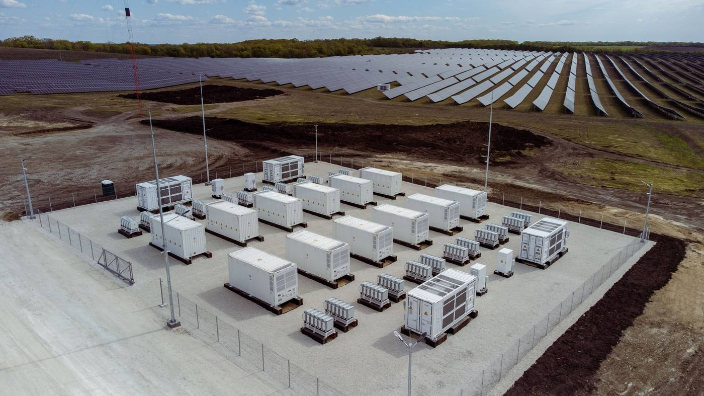
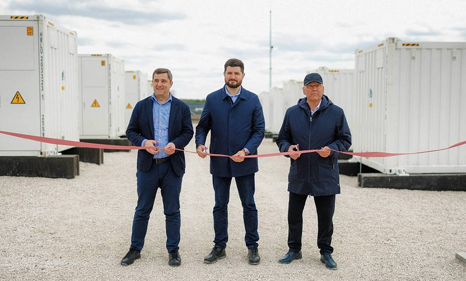

Știri & Actualizări Proiect
Noutăți despre proiecte, infrastructură și parteneriate strategice.

Cel mai mare BESS din Moldova, construit de Huawei, inaugurat și dat în exploatare
Sistemul de stocare în baterii de 60 MWh al GS Blue Electric din Rădeni a fost oficial inaugurat și dat în exploatare, devenind cel mai mare BESS din Moldova.

MAIB continuă să susțină GS Blue Electric prin finanțarea celui mai mare proiect de stocare a energiei în baterii din Moldova
MAIB a finanțat construcția unui sistem de stocare a energiei în baterii (BESS) de 60 MWh în satul Rădeni, raionul Strășeni, realizat de GS Blue Electric. Ceremonia oficială de inaugurare a avut loc pe 30 aprilie 2026.

MAIB susține inaugurarea unui parc fotovoltaic de 50 MW în Moldova
GS Blue Electric a inaugurat unul dintre cele mai mari parcuri fotovoltaice din Moldova. MAIB a sustinut această inițiativă printr-un împrumut verde de circa 17,8 milioane EUR.
ANRE acordă licența de producere pentru GS Blue Electric
Licența pentru producerea energiei electrice din surse regenerabile a fost emisă pentru o perioadă de 25 de ani.
GS Blue Electric câștigă prima licitație publică de energie regenerabilă din Moldova
GS Blue Electric a obținut statutul de Producător Eligibil Mare la prima licitație publică a Ministerului Energiei — un moment de referință pentru sectorul energetic național.
CEF Rădeni în imagini
47 fotografii documentând construcția, inaugurarea solară și punerea în funcțiune BESS.
MAIB susține inaugurarea unui parc fotovoltaic de 50 MW în Moldova
Sursă: ir.maib.md
GS Blue Electric a inaugurat unul dintre cele mai mari parcuri fotovoltaice din Moldova, situat în Rădeni, raionul Strășeni. Parcul solar, cu o capacitate instalata totala de 50 MW, reprezinta un moment semnificativ in eforturile Moldovei de a crește independența energetică. MAIB a sustinut această inițiativă printr-un împrumut verde de circa 17,8 milioane EUR pe o perioada de 8 ani.
Un pas înainte în finanțarea durabilă
Proiectul se aliniază strategiei de sustenabilitate a MAIB. Banca și-a stabilit un obiectiv de 17% pondere a creditelor verzi până în 2027 și 23% până in 2030, depasind deja acest reper in portofoliul corporativ. La finele T1 2025, portofoliul verde total al MAIB a depasit 1,2 miliarde MDL.
Recunoaștere internațională
MAIB a primit premiul Cel mai bun acord comercial verde al anului din partea BERD, în cadrul premiilor Programului de Facilitare a Comerțului 2024.
"Suntem mândri să finanțăm un proiect atât de ambițios. Energia verde nu mai este o alegere, ci o necesitate."
Giorgi Shagidze, CEO MAIB
"Lansarea acestei centrale fotovoltaice marchează un moment-cheie în dezvoltarea infrastructurii verzi din Moldova."
Ludmila Vintu, Administrator GS Blue Electric
Cel mai mare BESS din Moldova, construit de Huawei, inaugurat și dat în exploatare
Autor: Tristan Rayner
Sursă: ess-news.com

GS Blue Electric a inaugurat și dat în exploatare cel mai mare sistem de stocare a energiei (BESS) din Moldova, o facilitate la scara rețelei de 60 MWh LiFePO4, situata in Radeni, raionul Strășeni. Noua facilitate a fost finantata de investitori privati, pe masura ce Moldova isi extinde ambitiile in domeniul energiei curate.
Sistemul, echipat cu tehnologie Huawei FusionSolar, va furniza servicii critice de stabilizare a rețelei și va permite o integrare mai eficientă a parcului solar adiacent de 55,8 MWp in reteaua nationala de energie a Moldovei. BESS-ul a devenit operational in martie 2026 si reprezinta un moment-cheie în drumul Moldovei catre independența energetică si alinierea la standardele europene de energie.
MAIB continuă să susțină GS Blue Electric prin finanțarea celui mai mare proiect de stocare a energiei în baterii din Moldova
MAIB a finanțat construcția unui sistem de stocare a energiei în baterii (BESS) de 60 MWh în satul Rădeni, raionul Strășeni, realizat de GS Blue Electric, partener de lungă durată al băncii. Aceasta este una dintre cele mai semnificative investiții în stocarea energiei din Republica Moldova până în prezent. Ceremonia oficială de inaugurare a avut loc pe 30 aprilie 2026.
Instalația, amplasată în proximitatea Parcului Solar Rădeni de 50 MW, este cel mai mare sistem de stocare conectat la rețea din Republica Moldova și unul dintre cele mai mari din regiune. Proiectul va furniza servicii esențiale de echilibrare operatorului național de rețea Moldelectrica și va crește substanțial ponderea energiei solare care poate fi integrată în mod fiabil în sistemul energetic național.
Estimările preliminare indică faptul că proiectul va reduce emisiile cu aproximativ 7.000–9.000 tone de CO₂ echivalent pe an și va diminua dependența netă a Moldovei de importurile de energie electrică cu un procent estimat de 0,6–0,7%.
„MAIB a oferit sprijin constant grupului nostru de companii, iar parteneriatul dezvoltat cu MAIB ne-a permis să transformăm proiecte ambițioase în realitate."
Valerian Stratan, GS Blue Electric
„Sistemul BESS de la Rădeni este un proiect de referință atât prin amploarea sa, cât și prin faptul că demonstrează că investițiile private în stocarea energiei sunt viabile și atractive pentru finanțare în regiunea noastră."
Alexandru Sonic, Vicepreședinte maib, Divizia Corporate
Proiectul consolidează poziția maib de lider în finanțarea verde din Moldova și demonstrează angajamentul băncii de a susține infrastructura care crește securitatea energetică a țării și accelerează tranziția către energia regenerabilă.
GS Blue Electric câștigă prima licitație publică de energie regenerabilă din Moldova
GS Blue Electric a obținut statutul de Producător Eligibil Mare la prima licitație publică a Ministerului Energiei — un moment de referință pentru sectorul energetic național.
Prin Hotărârea Guvernului nr. 83/2025, Guvernul Republicii Moldova a aprobat rezultatele primei licitații publice pentru energie regenerabilă și a acordat statutul de Producător Eligibil Mare (PEM) investitorilor câștigători — un moment istoric pentru sectorul energetic național.
GS Blue Electric, în cadrul Consorțiului „Lumina Noastră", a câștigat licitația pentru 24 MW capacitate solară la centrala CEF Rădeni din raionul Strășeni — unul dintre cele șase proiecte câștigătoare în segmentul solar. Hotărârea a fost publicată în Monitorul Oficial pe 31 martie 2025.
Statutul de PEM îi conferă GS Blue Electric dreptul de a vinde energia electrică produsă la CEF Rădeni către Furnizorul Central la un preț fix garantat pentru 15 ani de la punerea în funcțiune. Schema face parte din programul de ajutor de stat autorizat prin Decizia Consiliului Concurenței EMAS-30 din 30 septembrie 2024.
Licitația a fost prima de acest tip organizată de Ministerul Energiei, cu 36 de oferte solare și 8 eoliene depuse. Dintre cele 11 proiecte solare câștigătoare, GS Blue Electric — în cadrul Consorțiului „Lumina Noastră" — a obținut cel mai mare proiect individual cu 50 MW putere instalată (24 MW capacitate sprijinită), amplasat în Rădeni, raionul Strășeni.
ANRE acordă licența de producere pentru GS Blue Electric
Licența pentru producerea energiei electrice din surse regenerabile a fost emisă pentru o perioadă de 25 de ani.
Prin Hotărârea Consiliului de Administrație nr. 315 din 10 iunie 2025, Agenția Națională pentru Reglementare în Energetică (ANRE) a eliberat SRL „GS Blue Electric" licența pentru activitatea de producere a energiei electrice din surse regenerabile — valabilă pe un termen de 25 de ani, pentru perioada 10.06.2025 – 09.06.2050.
09.06.2050
Licența a fost eliberată în conformitate cu Legea nr. 10 din 26.02.2016 privind promovarea utilizării energiei din surse regenerabile, Legea nr. 107 din 27.05.2016 cu privire la energia electrică și Legea nr. 160 din 22.07.2011 privind reglementarea prin autorizare a activității de întreprinzător — pe baza declarației depuse de SRL „GS Blue Electric" privind eliberarea licenței pentru activitatea de producere a energiei electrice din surse regenerabile.
Prin această decizie regulatorie, GS Blue Electric devine producător de energie electrică licențiat conform legislației moldovenești, finalizând cadrul formal de licențiere alături de statutul de Producător Eligibil Mare obținut prin licitația Ministerului Energiei (Hotărârea Guvernului nr. 83/2025).